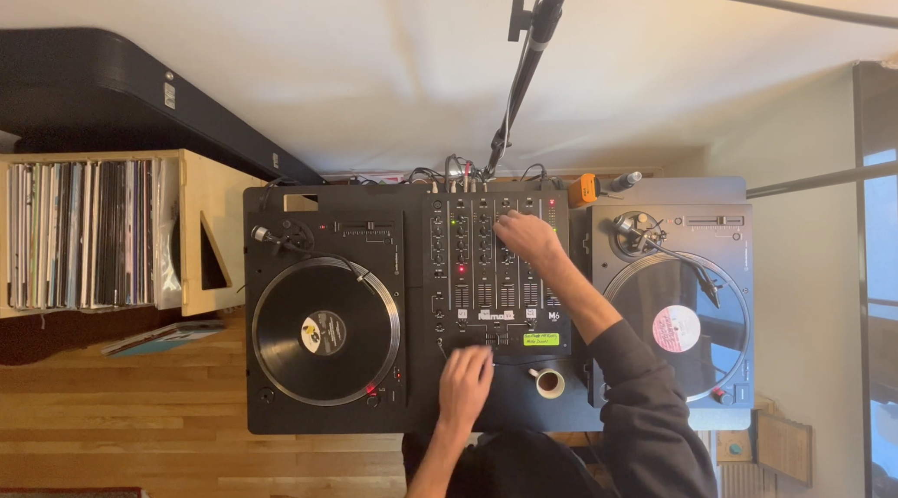
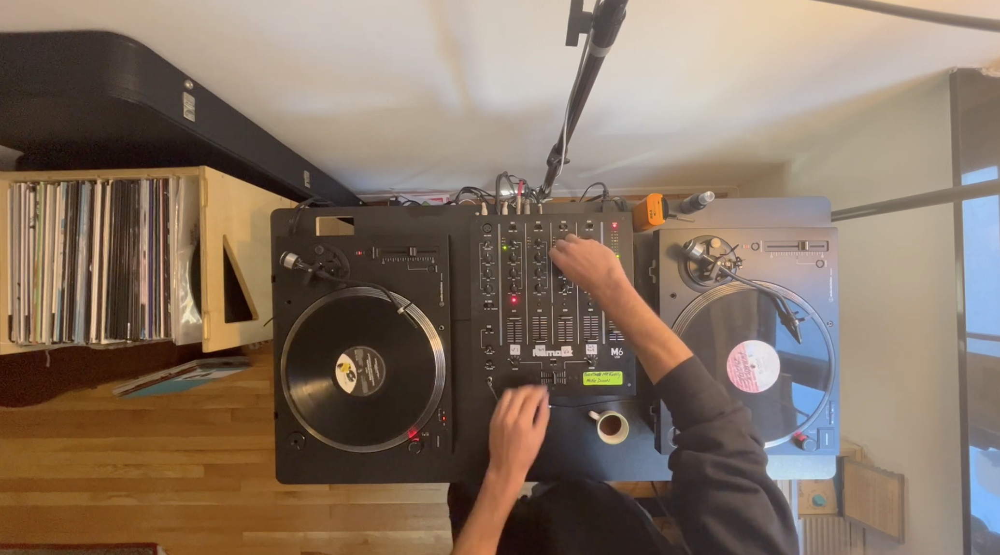

Audio Samples
There will be a blog post in the near future about my music set up, as well as linked demo sets.


There will be a blog post in the near future about my music set up, as well as linked demo sets.
